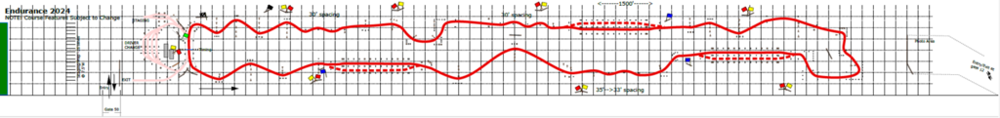

3. Team Goal
3.1 Project Background
Due to the unfortunate disqualification of the R26e due to waterproofing issues, we were not able to verify the race performance of the car with the aerodynamic package. Thus, we will continue the work of previous years to improve the car’s cornering performance with the addition of simulation improvement.
3.2 Aerodynamics Department Goals
In the FSAE Michigan endurance event, corners take up 70% of total distance, a significant portion of the track. Furthermore, the team stands to gain the most points from endurance out of all the events. Figure 1 shows the endurance course layout: it is a continuous run of turns and slaloms with only a few straight sections, so the car’s cornering performance matters for most of the lap.

The team’s goal for 2027 is to finish in the top 10 overall. The aerodynamics department supports this goal by improving the car’s performance in corners, where it spends most of each endurance lap.
3.3 Performance and Simulation Objectives
Because the R26e was disqualified before it could run (Section 3.1), there is no track data from last year from which to set a target. Instead, the R26e’s simulated cornering performance is used as the baseline, and the following targets were set for the R27e aerodynamic package:
- Increase full-car CL/CD in cornering from 2.27 to at least 2.40 (+5.7%).
- Keep full-car downforce in cornering at or above the R26e’s 322 N.
- Improve the reliability and stability of the CFD simulations, so that small differences between designs can be trusted (Sections 5.3 and 8.2).
This target is a working goal rather than one derived from lap-time simulation, and it may be revisited once the R27e has run on track. The current R27e design meets both performance targets, with a cornering CL/CD of 2.43 (+7.0%) and full-car downforce of 335.8 N (Section 6.2.3).